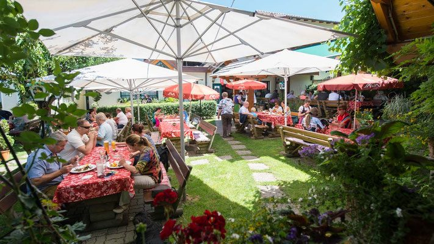
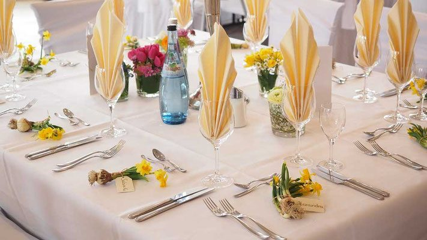

Wulfingweg
Dieser gemütlich für Familien geeignete Weg lockt kleine und große Ritter mit seinen Erlebnisstationen und beginnt bei der Burg Oberkapfenberg. Für den gesamten Wulfingweg sollten Familien rund zweieinhalb Stunden einplanen.
Wo die Zeit nicht läuft, sondern noch spazieren geht, wandert und Rad fährt.
Ein echtes Erlebnis, eine Entspannungsoase für Groß und Klein, Ruhe, ein herrlicher Ausblick über das gesamte Mürztal und eine typisch steirische Küche erwarten Sie.

Was gibt es Schöneres, als inmitten unberührter Natur zu wandern, zu spazieren und den wunderschönen Ausblick zu genießen?
Das urige Gasthaus verfügt über Sitzplätze im Inneren des Lokals und 150 Sitzplätze auf der Sonnenterrasse. Hier hat man nicht nur einen tollen Ausblick, sondern kann auch die Tiere beobachten und den Kindern beim Spielen zusehen.
Ein großer Parkplatz vor unserem Gasthaus bietet die idealen Bedingungen für Busse. Gäste können direkt vor unserem Haus aus dem Bus aussteigen. Durch unsere jahrelange Busgruppenerfahrung ist es uns möglich, unsere Gäste schnell und freundlich zu bedienen.

Das urige Gasthaus verfügt über 130 Sitzplätze im Innenbereich und 150 Sitzplätze auf der Sonnenterrasse. Nach dem Essen können die Gäste in unserem großzügigen Areal Tiere besichtigen oder bei einem Spaziergang entlang des Wulfingweges die Verdauung anregen.
Wir bieten unseren Gästen traditionelle Gerichte, steirische Schmankerl und täglich frische, hausgemachte Mehlspeisen. Besonders bekannt sind wir für unsere Wildspezialitäten.
Die aktuelle Karte erhalten Sie gerne telefonisch unter 0664 5253 974.
Tierliebhaber finden bei uns einen Streichelzoo und ein Wildtiergehege. Speziell unsere kleinen Gäste sind davon immer sehr begeistert – und von der Sonnenterrasse aus kann man die Tiere beim Essen beobachten.
Abwechslung gibt es auch für unsere kleinen Gäste: Ein großer, weitläufiger Spielplatz und ein Tiergehege erfreuen jedes Kinderherz. Beim Bergerbauer warten zusätzlich eine Kinder-Go-Kartbahn und ein weiterer Spielplatz.
Der Prieselbauer ist der ideale Ausgangspunkt oder Zwischenstopp für Wanderer und Mountainbiker. Der Wulfingweg, der Kapfenberger Panorama-Rundweg mit Spaß und Abenteuer für die ganze Familie, führt direkt bei uns vorbei.
Dieser gemütlich für Familien geeignete Weg lockt kleine und große Ritter mit seinen Erlebnisstationen und beginnt bei der Burg Oberkapfenberg. Für den gesamten Wulfingweg sollten Familien rund zweieinhalb Stunden einplanen.
Erkunden Sie die 1328 erbaute Burg Oberkapfenberg und seien Sie hautnah dabei, wenn Greifvögel über Ihre Köpfe hinweg schweben.
Diverse Abenteuer- und Geschicklichkeitsstationen wie die Baumstadt, das Waldhaus, die Löwengrube oder die Wackelbrücke sorgen für Spaß und Unterhaltung.
Unser uriges Gasthaus bietet Platz für 90 Personen im Innen- und 150 Personen im Außenbereich – ideal für Feiern aller Art.